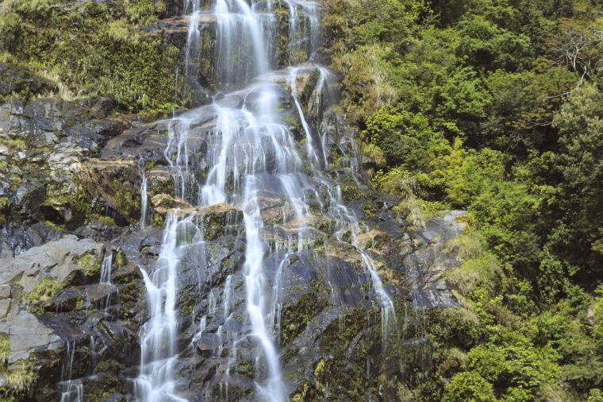

น้ำตกหินลาด ที่เที่ยวนครศรีธรรมราช น้ำตกสวย แห่ง ขนอม มาชิลกลางธรรมชาติกัน
หนึ่งในที่เที่ยวของ อำเภอขนอม นครศรีธรรมราช ก็คือ น้ำตกหินลาด น้ำตกสวย แหล่งท่องเที่ยวกลางธรรมชาติ ตั้งอยู่ใน บ้านในเพลา เป็นบริเวณของสายน้ำที่ไหลมาจากเขาเพลา และไหลผ่านโขดหินเยอะแยะมากมายที่อยู่ในลำธาร บางช่วงก็จะมีความลาดชันมาก ก่อนจะตกลงแอ่งน้ำเบื้องล่างนั่นเองค่ะ

ด้วยความที่บริเวณของ น้ำตกหินลาด นั้น เต็มไปด้วยหินเยอะแยะมากมายสมชื่อ บวกกับบรรยากาศรอบๆ ก็สวยงามร่มรื่นเต็มไปด้วยต้นไม้ นอกจากนั้นยังมี สะพานโค้ง สวยๆ เป็นฉากงามๆ ของน้ำตกอีกด้วยค่ะ งานนี้เที่ยวเพลิน เดินชมธรรมชาติกันได้ชิลๆ เลยค่ะ